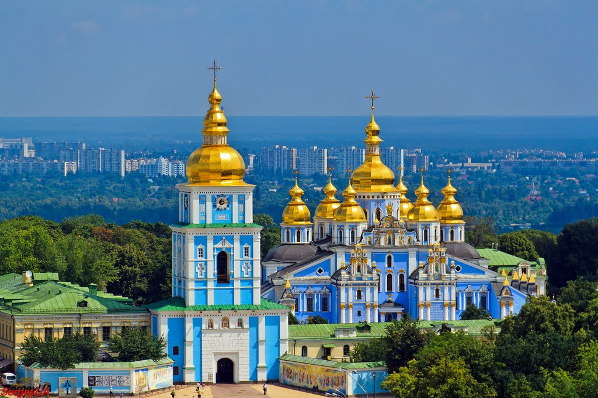

Tips Ucrania por 3 Días.
Kiev es la capital de Ucrania, además de la antigua ciudad más importante de la ya
extinguida de Unión Soviética.
Su ubicación es especial, situada entre colinas y a orillas del Río Dniéper, una ciudad marcada con la historia con mucho que ofrecer a sus visitantes, con monumentos majestuosos y lugares asombrosos. ¿Comenzamos a descubrirla?
Para ver lo mejor de Kiyv se necesitan al menos 5 a 6 días! Si solo dispones de 3 o 4 días tendrás que seleccionar qué visitar, al menos para poderte hacer una idea general de la capital de Ucrania.
En esta ciudad el contraste entre modernidad e historia está presente por todas partes. Antiguas catedrales, arquitectura urbana vanguardista y animados barrios hacen que los días en Kyiv se queden cortos.
Yo dediqué a la ciudad 3 días completos y no me aburrí en ningún momento.
Clicktraveller Viajando Por Kyiv 3 Días:
Dia 1: Calle Khreschatyk, Maidan, Parque y Palacio Mariinsky, Monasterio de San Miguel de las Cúpulas Doradas
Comienza el recorrido por Kiev visitando la avenida principal de la ciudad, sin duda, la más transitada de todas, repleta de ambiente europeo y lleno de turistas, muchos locales y restaurantes tipicos de la epoca.
El estilo de la avenida en su mayoria del renacentismo, con lugares majestuosos y elegantes. Está repleto de tiendas de todo tipo, bares, restaurantes, artistas, incluso realizan conciertos al aire libre de vez en cuando.
Es imposible no pasear por ella en algun momento sin tener una maravillosa experiencia en esta parte de la ciudad.

Despues seguimos por la plaza de la independencia que es el centro neuralgico de la ciudad y está al lado de todo, por lo que suele ser un lugar muy bullicioso y concurrido, uno de los imprescindibles de Kyiv.
Es un lugar cargado de historia, hace pocos años el pueblo ucraniano defendió su derecho de independencia costando la vida de Millones de civiles.
En la actualidad a pesar de la guerra, es un lugar repleto de ambiente, con músicos callejeros, puestos donde tomar algo, además, está rodeado de los edificios públicos más importantes.
Más tarde, visitamos el Parque Mariinsky, la zona verde más conocida y preciosa de la ciudad.
Es un lugar ideal para disfrutar de la calma y pasear sin prisa, alejado del bullicio de Kiev, además de un entorno natural único alberga algunos edificios y monumentos fascinantes.
Por ejemplo, destaca el Palacio Mariinsky, es de estilo barroco y es considerado una joya arquitectónica.
Es la residencia de los presidentes de Ucrania, solo se puede visitar desde el exterior.

El Museo Nacional de Chernóbil, es uno de los museos más visitados de toda la ciudad, en este lugar, puedes comprender muchas cosas sobre una de las tragedias más grandes de la historia de la humanidad.
Se trata de una exposición completa sobre este desastre nuclear, información sobre porqué ocurrió y las consecuencias que ha ocasionado, que persisten aún en la actualidad. Es una visita muy interesante y amena por lo que te recomiendo que no te la pierdas, el precio de entrada es de 10 grivnas.
Posterior nos vamos al Monasterio de San Miguel de las Cúpulas Doradas
Para termina el día visitamos el Monasterio de San Miguel, que es una visita obligada en cualquier ruta por Kiev gracias a su asombrosa arquitectura. Uno de los templos ortodoxos más importantes de la Ciudad de Kiev.
Este monumento es el edificio que hace que la ciudad sea conocida por sus cúpulas doradas, desde lejos ya podrás contemplar el brillo de estas con el reflejo del sol.
Destaca por su llamativo exterior, con sus colores blancos, azul turquesa y el dorado de sus cúpulas, creando un efecto visual único.
Además, es considerado como una de las iglesias más bonitas de Kiev ¡y eso que la ciudad tiene iglesias preciosas!

Dia 2: Catedral de ST Andrew, Kokorivska Altanka, Catedral Santa Sofia, Monasterio de las Cuevas, Estatua Madre Patria
El segundo día es para conocer muchos de los templos más importantes de la ciudad, iremos en búsqueda de las mejores panorámicas de la ciudad y a conocer un poco más sobre la historia de la ciudad y comenzamos con la Catedral de St Andrew.
La Catedral de St Andrew, uno de los lugares más visitados por los turistas gracias a su belleza arquitectónica ¡toda una obra de arte!
En la actualidad, el edificio está en un proceso de restauración para poder mostrar a los visitantes su mejor cara, pero a pesar de ello, su exterior sigue siendo visible, por lo que no puede faltar acercarte a disfrutar de su fachada barroca.
Destaca por su color azul turquesa y sus decoraciones doradas ¡fascinante!
Ubicado en un entorno precioso lo que le proporciona un ambiente aún más especial.
Luego vamos a Kokorivska Altanka, que se encuentra en la Colina de Vladimir, se trata de un lugar maravilloso y romántico. Desde este mirador puedes conseguir las mejores panorámicas de la ciudad, podrás disfrutar de las vistas del Dnieper y toda la orilla izquierda.
Es un lugar desconocido para la mayoría de turistas, por lo que no se encuentra masificado, perfecto para disfrutar de la tranquilidad de la zona. ¡Inmortaliza el momento!

Continuamos hacia la principal catedral de Ucrania que es la Catedral de Santa Sofía, dispone de una colección de mosaicos y frescos del siglo XI y es considerada como una de las 7 maravillas de Ucrania, incluso esta incluida en la lista del Patrimonio Mundial de la UNESCO.
Se puede subir al campanario para captar una vista preciosa del centro de la ciudad y del territorio del Santuario.
Es el templo Ortodoxo más importante de la ciudad de Kiev y para los ucranianos.
El acceso, desde la Plaza, es de pago pero dejan tomar fotografías sin flash. El campanario es impresionante y por el precio económico de la entrada puedes también subir a la parte alta.
Majestuosa por dentro y por fuera, sin duda, el lugar más imprescindible de la ciudad.
Por la tarde nos dirijimos al Monasterio de las cuevas Conocido como Kyiv como Pechersk Lavra, este es uno de los edificios religiosos más visitados de la ciudad, construido en el siglo XI y declarado Patrimonio de la Humanidad.
Es el monasterio con más antigüedad del país, a pesar de su gran importancia, lo que lo hace tan famoso son sus cuevas, donde vivían los monjes del edificios hasta el siglo XV.

Visita su interior y recorre sus catacumbas, estas celdas puedes visitarlas por un estrecho laberinto iluminado con velas que portan sus fieles, sin duda, un lugar de los más especial y único. ¡No puedes perdértelo!
Para finalizar el dia, un lugar que tienes que visitar en cualquier ruta por Kiev. Se trata de un monumento histórico donde se encuentra La Estatua de la Madre Patria de acceso sencillo. La estatua es imponente, majestuosa y de acero.

Además, cuenta con un museo de la segunda Guerra mundial donde puedes pagar la entrada guiada que te explica cada uno de los momentos que vivió Ucrania en la guerra. Tienen expuestos vídeos y objetos personales de soldados fallecidos en acontecimientos recientes ¡impactante!
Dia 3: Mercado Central Kyiv, Museo PinchukArtCentre, Casa con Quimeras, Puerta Dorada, Opera Nacional
El tercer día es para conocer de lleno la cultura de la ciudad, visitando algunos lugares que son el vivo reflejo de sus habitantes, además de algunos de sus monumentos más emblemáticos.
El Mercado Central de Kiev. Se trata de un antiguo mercado de abastos donde puedes encontrar una gran variedad de productos locales.
Es perfecto para adentrarte de lleno en la cultura de Kiev, conociendo de primera mano la vida cotidiana de sus habitantes, siempre con un ambiente animado y bullicioso.
Incluso cuenta con algunos puestos donde comprar comida y bebida para llevar ¡una ocasión perfecta para degustar su gastronomía!
Museo PinchukArtCentre
El arte contemporáneo es todo un género y no a todos les gustará. Pero incluso si no eres fanático de él, vale la pena recorrer todas las exposiciones de la galería, ya que puedes encontrar auténticas obras de arte.
Es un museo muy controvertido que no deja indiferente a ninguno de sus visitantes, se trata de uno de los edificios más visitados de la ciudad.
La Casa con Quimera, es un lugar que no puedes perder la oportunidad de visitar el edificio de la Casa de las Quimeras, una construcción de estilo Art-Nouveau.
Destaca por sus peculiares cornisas, donde cuelgan animales mitológicos y otros seres, sin duda, su fachada es toda una obra de arte arquitectónica.
Es uno de los edificios más bonitos de la ciudad, todo un símbolo en Kiev, originario del siglo XX y obra del famoso arquitecto Vladislav Gorodetsky.
La Puerta dorada de Kiev
Es una réplica del Golden Gate hecha en 1980. Representa la puerta de entrada fortificada a Kiev durante la Edad Media, siendo esta, la primera fortaleza de la ciudad.
El estado de conservación y restauración es excelente, siendo un gran ejemplo del pasado de la ciudad.
Una de las estructuras más antiguas de Europa del Este, un símbolo de Kiev.
Hay acceso al interior entre las 10:00 y las 12:30 sólo dos días de la semana. Con el acceso podrás subir a la parte más alta y admirar algunas reliquias, además de conseguir unas vistas espectaculares.
Ópera Nacional de Ucrania
Es un edificio imponente de enormes dimensiones de corte neoclásico y modernista. Se inauguró a principios del siglo XX y lleva el nombre del gran pintor y poeta nacionalista Taras Shevchenko.
Es uno de las grandes imprescindibles de Kiev. Este es un lugar maravilloso, donde es imposible no disfrutar de la increíble arquitectura. Pero la estructura no es la única cosa a la que se debe destacar, el ballet y los espectáculos son absolutamente espectaculares.
Es un plan perfecto para acabar la visita a la ciudad, las entradas a los espectáculos tienen un precio muy económico, tanto es así que a veces es complicado conseguir entradas en los mejores palcos debido a su bajo precio.

Tarás Shevchenko
La Universidad Nacional Tarás Shevchenko de Kiev (en ucraniano: Київський
національний університет імені Тараса Шевченка) es una universidad ubicada
en Kiev,
Ucrania, fundada en 1834 como Universidad de San Vladímir.
Actualmente,
su estructura consiste de catorce facultades y cuatro institutos.
Es considerada como la universidad más importante de Ucrania y un
importante centro de educación avanzada.

Arco de la Libertad del Pueblo Ucraniano
El Arco de la Libertad del Pueblo Ucraniano (en ucraniano, Арка свободи українського народу, romanizado: Arka svobody ukraïnskoho narodu), conocido coloquialmente como «el yugo» (Ярмо, Yarmó), es un monumento de la era soviética situada a orillas del río Dniéper en Kiev, la capital de Ucrania.
Fue inaugurado en 1982 para conmemorar el 60.º aniversario de la Unión Soviética y los 1500 años de la ciudad de Kiev. En abril de 2022, durante la invasión rusa de Ucrania, se desmanteló una parte del monumento, una estatua bajo el arco que representaba a un trabajador ruso junto a otro ucraniano.

Donde Comer en Kyiv
Tengo una larga lista de restaurantes que me gustan especialmente, muchos se encuentran en el barrio donde se encontraba mi alojamiento.
Abajo tienes todo el listado y aquí te dejo un mapa para que puedas ver la ubicación de todos los restaurantes de un solo vistazo.
Restaurantes en Kyiv:
- Musafir Teatralna,La comida Vegana es de muy buena calidad, el personal va con trajes tradicionales y la música así como el ambiente que se crea es único. Lo recomiendo mucho.
- Musafir Rognidynska, La comida es increible y los precios son super razonables para ser centrico. Musafir sirve el mejor Shashlyk de la ciudad. !Altamente recomendado!
- Par Bar Muy buen lugar para SHISHA, comida y bebidas. Para mí, si estás en Kiev, tienes que visitar PAR BAR. Le doy 5 estrellas.
- Mama Manana, Es un restaurante de comida georgiana, encontramos el shashlik de pollo, khachapuri de queso, una ensalada georgiana y 2 copas de vino. Una comida deliciosa y de gran valor especial para ir de cena romantica. Como dato especial, yo No hablaba ucraniano, pero el camarero de habla inglesa fue fantástico y me recomendó vinos para acompañar la comida, así como consejos sobre los platos.
Consejos para tu viaje a Kyiv:
- KYIV Boryspil Airport: el transporte publico conecta el aeropuerto con las estaciones de metro de Kyiv, tarda unos 45 minutos en llegar y cuesta unos 20€ el trayecto.
- Traslados Taxi: Contratando los traslados desde el aeropuerto a tu hotel.
Seguro de Viajes: Te sugiero llevar un seguro de viaje que cubra cualquier contratiempo que pueda ocurrir, además para un viaje de tres días a Kyiv es muy asequible, más aún con el idioma allí. Revisalo Aquí
Cómo moverse por Kyiv
Lo mejor es moverse por Kyiv en metro, autobús o taxi, dependiendo del trayecto.
Los taxis son bastante normal en precios y es una ciudad con bastantes grande, por eso lo recomiendo.
Finalmente aqui encontraras un mapa con todas las cosas que ver y hacer en 3 días en Kyiv, restaurantes recomendados y alojamientos donde pasar unos días inolvidables.
¡Y hasta aquí el post de Kyiv en tres días!
¿Añadirías alguna cosa más que ver en Seoul en tres días? Si tienes cualquier duda, ¡te espero en los comentarios!


5 Comentarios
A.Dadario
Me encanta la historia de Roma.
K.Reeves
Muchos guerreros notables pasaron por el coliseo Romano para entrener a la gente.
O.Wilde
Nadie podría decir no a una cena romantica cerca del coliseo.
Dejame Un Comentario